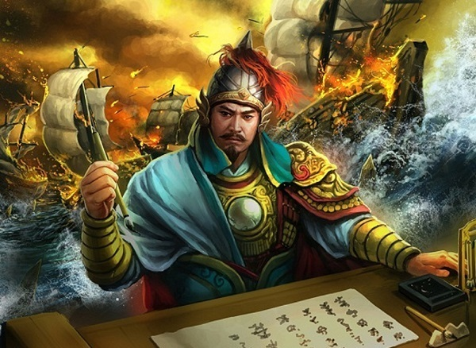
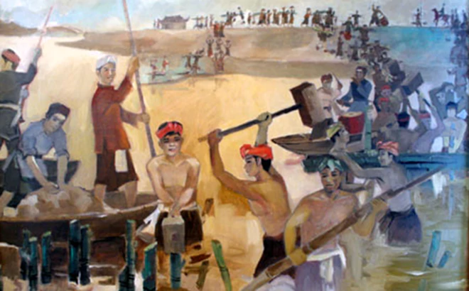
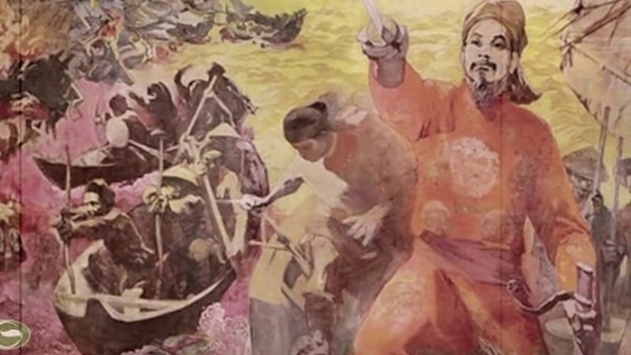
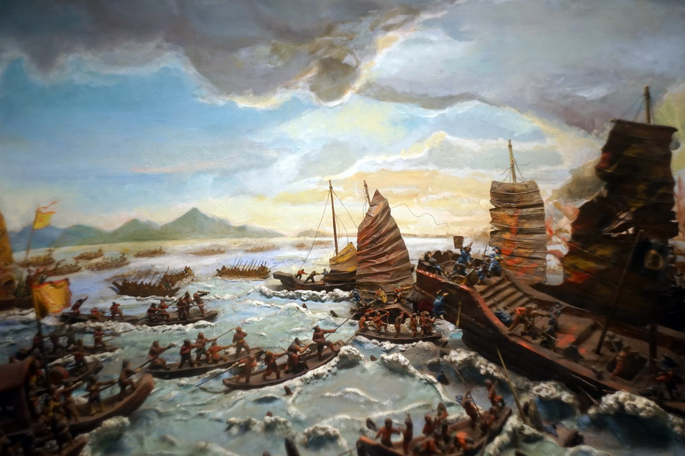

🌊
Sử Việt Tương Tác
NGÔ QUYỀN
Trận Bạch Đằng
Trận Bạch Đằng
Năm 898 — 939 · Chấm Dứt 1000 Năm Bắc Thuộc
Ngươi là Ngô Quyền — hào trưởng đất Đường Lâm, người sẽ đóng hàng ngàn cọc gỗ xuống lòng sông Bạch Đằng, biến quy luật thủy triều thành vũ khí đánh tan quân Nam Hán. Một hành trình 6 chương về mưu trí, lòng trung nghĩa và khoảnh khắc mở ra kỷ nguyên độc lập.
🌊 6 chương
🎓 Nhiều kiểu thử thách
📖 Có nguồn tham khảo
▾ hoặc cuộn xuống
🏘️ CHƯƠNG I · NĂM 898 — ĐẤT HAI VUA ĐƯỜNG LÂM 📖 nguồn

🏘️ LÀNG ĐƯỜNG LÂM — SƠN TÂY
1
898
Đường Lâm
2
~931
Ái Châu
3
937
Nội Loạn
4
938
Kế Cọc Ngầm
5
938
Nhử Địch
6
939
Xưng Vương
📚 BỐI CẢNH
Năm 898, tại làng Đường Lâm — mảnh đất sau này còn sinh ra vua Phùng Hưng, nên dân gian gọi là "đất hai vua" — một cậu bé chào đời trong gia đình hào trưởng có uy tín. Đất nước khi ấy vẫn chìm trong vòng đô hộ của các thế lực phương Bắc.
Ngươi là Ngô Quyền. Sử sách chép ngươi "vẻ người khôi ngô, mắt sáng như chớp, dáng đi thong thả như hổ" — ai gặp cũng phải nể phục. Nhưng tài năng ấy sinh ra giữa thời đất nước chưa có chủ quyền thực sự.
MỘT BÔ LÃO TRONG LÀNG — NÓI VỚI CHA NGƯƠI
"Thằng bé này tướng mạo khác thường, sau này ắt làm nên nghiệp lớn. Ông cứ để nó theo học binh thư, chớ ép nó chỉ quanh quẩn ruộng vườn."
⚡ PHÁN ĐOÁN CHỚP NHOÁNG
"Vào thời điểm Ngô Quyền chào đời, Việt Nam đã là một quốc gia độc lập, không còn ách đô hộ phương Bắc." — Đúng hay Sai?
Lớn lên giữa thời loạn, chàng trai Đường Lâm đứng trước một câu hỏi: an phận làm hào trưởng một vùng, hay dấn thân vào con đường binh nghiệp đầy bất trắc để tìm cơ hội thay đổi vận mệnh non sông?
💭 SUY NGẪM (không chấm điểm)
Một người tài giỏi sinh ra giữa thời loạn — nên chọn an toàn giữ mình, hay chấp nhận rủi ro để nắm lấy cơ hội thay đổi thời cuộc?
Không có đáp án đúng/sai, đây là câu hỏi để bạn tự suy ngẫm — sẽ quay lại ở cuối câu chuyện.
❌ LỰA CHỌN KHÁC — AN PHẬN MỘT VÙNG
Nếu chỉ an phận giữ một vùng nhỏ, có lẽ Ngô Quyền sẽ mãi mãi là một hào trưởng vô danh trong sử sách — và biết đâu, chiến thắng Bạch Đằng năm 938 sẽ không bao giờ xảy ra, hoặc phải chờ thêm rất lâu mới có người khác đứng ra gánh vác.
Rất có thể đất nước sẽ phải chờ đợi thêm nhiều năm nữa mới có một thủ lĩnh đủ tài trí và uy tín để tập hợp lực lượng, tận dụng đúng thời cơ khi nhà Nam Hán suy yếu. Cơ hội lịch sử không phải lúc nào cũng lặp lại.
⚔️ CHƯƠNG II · ~931-937 — DƯỚI TRƯỚNG DƯƠNG ĐÌNH NGHỆ 📖 nguồn

⚔️ ÁI CHÂU — THANH HÓA
1
898
Đường Lâm
2
~931
Ái Châu
3
937
Nội Loạn
4
938
Kế Cọc Ngầm
5
938
Nhử Địch
6
939
Xưng Vương
🤝 NHÂN DUYÊN LỚN
Ngô Quyền theo phò Dương Đình Nghệ — hào trưởng lớn ở Ái Châu, người từng đánh đuổi quân Nam Hán giành quyền tự chủ cho Giao Châu năm 931. Nhận thấy tài năng hiếm có, Dương Đình Nghệ gả con gái cho ông và giao cai quản Ái Châu.
Dương Đình Nghệ nuôi tới 3.000 "con nuôi" (nghĩa tử) làm lực lượng thân tín trong nhà. Hai trong số đó sẽ có số phận trái ngược hoàn toàn: một người là Ngô Quyền — rể quý, trung thành tuyệt đối; người kia là Kiều Công Tiễn — kẻ sau này sẽ phản bội chính ân nhân của mình.
DƯƠNG ĐÌNH NGHỆ — GIAO VIỆC CHO CON RỂ
"Con là người ta tin tưởng nhất trong đám nghĩa tử. Ái Châu giao cho con cai quản — hãy trị vì nghiêm minh, được lòng dân."
🔗 GHÉP CẶP — NHÂN VẬT & VAI TRÒ
Bấm vào một nhân vật bên trái, rồi bấm đúng vai trò tương ứng bên phải.
NHÂN VẬT
VAI TRÒ THỰC SỰ
Đã ghép: 0/3
💔 CHƯƠNG III · NĂM 937 — NỘI LOẠN, KIỀU CÔNG TIỄN PHẢN BỘI 📖 nguồn

💔 ĐẠI LA — NĂM 937
1
898
Đường Lâm
2
~931
Ái Châu
3
937
Nội Loạn
4
938
Kế Cọc Ngầm
5
938
Nhử Địch
6
939
Xưng Vương
⚠️ PHẢN TRẮC
Năm 937, Kiều Công Tiễn — một nha tướng của Dương Đình Nghệ — vì tham vọng quyền lực đã sát hại chính chủ tướng để đoạt lấy chức Tiết độ sứ. Biết mình không được lòng dân, hắn hèn nhát cầu cứu nhà Nam Hán — mở đường cho ngoại xâm quay trở lại.
Tin dữ truyền đến Ái Châu: cha vợ — người thầy, người ân nhân lớn nhất đời ngươi — đã bị chính kẻ mình từng tin tưởng sát hại. Toàn Giao Châu phẫn nộ.
MỘT TƯỚNG SĨ DƯỚI QUYỀN — TÂU VỚI NGƯƠI
"Thưa chủ tướng, Kiều Công Tiễn đã cầu cứu Nam Hán! Nếu quân Nam Hán kéo sang, nó sẽ làm nội ứng ngay trong lòng ta. Đây là mối họa kép — vừa phản thần, vừa ngoại xâm!"
☑ CHỌN NHIỀU — ĐIỀU GÌ THỰC SỰ XẢY RA NĂM 937?
Chọn TẤT CẢ các sự kiện có thật đã xảy ra (có nhiều hơn 1 đáp án đúng):
Kiều Công Tiễn sát hại Dương Đình Nghệ để đoạt chức Tiết độ sứ
Dương Đình Nghệ nhường ngôi cho Kiều Công Tiễn trước khi mất
Kiều Công Tiễn cầu cứu nhà Nam Hán để giữ chức vị
Ngô Quyền tiến quân từ Ái Châu ra Đại La để trừng trị kẻ phản bội
Ngô Quyền tha bổng Kiều Công Tiễn để giữ hòa khí nội bộ
📖 CÁCH NHÌN LỊCH SỬ
Hành động của Kiều Công Tiễn được Đại Việt sử ký toàn thư gọi là "cõng rắn cắn gà nhà" — một trong những hành vi bị lịch sử lên án nặng nề nhất thời kỳ này. Ngô Quyền, với tư cách con rể và người kế thừa uy tín của Dương Đình Nghệ, quyết định hành động ngay.
💭 SUY NGẪM (không chấm điểm)
Nhớ lại câu hỏi ở Chương II: điều gì quyết định lòng trung nghĩa? Có lẽ câu trả lời không nằm ở xuất thân, mà ở lựa chọn của mỗi người khi đối diện với cám dỗ quyền lực.
Không có đáp án đúng/sai — hãy giữ câu hỏi này khi đọc tiếp.
🌊 CHƯƠNG IV · NĂM 938 — KẾ SÁCH CỌC NGẦM THIÊN TÀI 📖 nguồn
🌊 SÔNG BẠCH ĐẰNG — CỬA BIỂN HIỂM YẾU
1
898
Đường Lâm
2
~931
Ái Châu
3
937
Nội Loạn
4
938
Kế Cọc Ngầm
5
938
Nhử Địch
6
939
Xưng Vương
🪵 KẾ SÁCH CHƯA TỪNG CÓ
Sau khi trừ khử Kiều Công Tiễn, tin dữ tiếp tục dồn dập: vua Nam Hán Lưu Cung sai con trai — thái tử Lưu Hoằng Tháo — đem đại quân thủy hùng hậu tiến vào Giao Châu. Ngô Quyền quan sát kỹ địa thế sông Bạch Đằng — nơi thủy triều lên xuống chênh lệch tới vài mét mỗi ngày.
Một kế sách chưa từng có trong lịch sử quân sự hình thành trong đầu ngươi: cho quân và dân đẵn hàng ngàn cây gỗ lim, đẽo nhọn đầu, bịt sắt, rồi đóng ngầm xuống lòng sông ở khu vực cửa biển hiểm yếu.
NGÔ QUYỀN — BÀN KẾ VỚI TƯỚNG SĨ
"Hoằng Tháo là đứa trẻ dại, đem quân từ xa đến, quân lính còn mỏi mệt, lại nghe Công Tiễn đã chết, không có người làm nội ứng — nó đã mất vía trước rồi."
⚡ PHÁN ĐOÁN CHỚP NHOÁNG
"Ngô Quyền dùng đá tảng để làm bãi chướng ngại vật dưới lòng sông Bạch Đằng." — Đúng hay Sai?
📖 ĐIỀU KIỆN ĐỂ KẾ SÁCH THÀNH CÔNG
Việc đóng cọc được tiến hành hết sức bí mật trong nhiều tuần, có sự tham gia của đông đảo dân binh quanh vùng cửa sông. Bí mật này phải được giữ tuyệt đối — chỉ cần lộ ra, toàn bộ kế hoạch sẽ sụp đổ.
🪵 Hàng ngàn cọc gỗ lim bịt sắt🌊 Lợi dụng thủy triều lên xuống🤫 Thi công bí mật nhiều tuần
💭 SUY NGẪM (không chấm điểm)
Một kế sách thiên tài trên giấy vẫn có thể thất bại nếu người thực hiện thiếu kiên nhẫn. Điều gì khó hơn: nghĩ ra một mưu kế hay, hay kiên trì chờ đúng thời điểm để thực hiện nó?
Câu trả lời sẽ dần hé lộ ở chương sau.
⚔️ CHƯƠNG V · NĂM 938 — NHỬ ĐỊCH VÀO BẪY 📖 nguồn

⚔️ 30.000 QUÂN NAM HÁN TIẾN VÀO CỬA BIỂN
1
898
Đường Lâm
2
~931
Ái Châu
3
937
Nội Loạn
4
938
Kế Cọc Ngầm
5
938
Nhử Địch
6
939
Xưng Vương
🎯 THỜI KHẮC QUYẾT ĐỊNH
Bãi cọc đã đóng xong, ẩn mình dưới lòng sông. Đoàn thuyền chiến của Lưu Hoằng Tháo đang tiến vào cửa biển — 30.000 quân, đông gấp đôi quân ta. Mọi thứ giờ phụ thuộc vào một điều duy nhất: làm sao dụ được toàn bộ đoàn thuyền địch tiến đúng vào khu vực cắm cọc, đúng lúc thủy triều bắt đầu rút.
Bộ tướng dưới quyền ngươi lo lắng hỏi: "Thưa chủ tướng, quân địch đông và thuyền lớn — nếu đánh ngay bây giờ khi triều đang lên, liệu có ổn không?"
NGÔ QUYỀN — RA LỆNH
"Cho thuyền nhỏ ra khiêu chiến, giả vờ thua chạy vào sâu trong sông. Đợi đúng lúc thủy triều rút — khi ấy cọc nhọn sẽ tự lộ ra, ta mới toàn lực phản công!"
🎯 CHỌN CHIẾN LƯỢC
Là Ngô Quyền, khi đoàn thuyền địch đã tiến vào cửa sông lúc triều đang lên, bạn chọn thời điểm nào để phản công?
📖 VÌ SAO PHẢI CHỜ ĐỢI?
Bãi cọc chỉ phát huy tác dụng khi thủy triều rút — lúc đó những mũi sắt nhọn mới nhô lên khỏi mặt nước, đâm thủng đáy thuyền địch. Nếu tấn công quá sớm khi triều còn cao, toàn bộ kế hoạch cọc ngầm sẽ vô dụng.
🏆 CHƯƠNG VI · 938-939 — ĐẠI THẮNG BẠCH ĐẰNG 📖 nguồn

🏆 CHẤM DỨT HƠN 1000 NĂM BẮC THUỘC
1
898
Đường Lâm
2
~931
Ái Châu
3
937
Nội Loạn
4
938
Kế Cọc Ngầm
5
938
Nhử Địch
6
939
Xưng Vương
Thủy triều rút. Hàng ngàn mũi cọc sắc nhọn đồng loạt nhô lên như răng hổ. Thuyền chiến Nam Hán lao vào — vỡ tan từng chiếc một. Quân ta từ hai bờ đồng loạt xông ra đánh áp sát. Lưu Hoằng Tháo tử trận ngay tại chỗ.
MỘT TÌ TƯỚNG BÁO TIN VỀ BIÊN GIỚI
"Thưa Lưu vương, thái tử đã tử trận! Toàn bộ thủy quân bị tiêu diệt, không còn đường cứu vãn!"
Lưu Cung đang đóng quân chờ tiếp ứng gần biên giới, nghe tin con trai tử trận, kinh hoàng rút quân về nước, từ bỏ hẳn ý định xâm chiếm Giao Châu.
🏆 XẾP HẠNG — ĐIỀU GÌ LÀM NÊN CHIẾN THẮNG?
Theo bạn, đâu là yếu tố quyết định nhất làm nên đại thắng Bạch Đằng? (bấm vào lựa chọn bạn cho là đúng nhất)
1Kế sách cọc ngầm sáng tạo, lợi dụng đúng quy luật thủy triều tự nhiên
2Trừ khử nội gián Kiều Công Tiễn trước khi đối đầu ngoại xâm
3Sự bí mật tuyệt đối trong quá trình chuẩn bị suốt nhiều tuần
🇻🇳
Chiến thắng Bạch Đằng năm 938 đã chấm dứt hơn 1000 năm Bắc thuộc, mở ra kỷ nguyên độc lập tự chủ lâu dài của dân tộc Việt Nam. Năm 939, Ngô Quyền xưng vương, đóng đô tại Cổ Loa — đặt nền móng cho một quốc gia độc lập với đầy đủ triều nghi.
— Sử gia Lê Văn Hưu: "có thể lấy làm vẻ vang được cho hậu thế"
📖 DI SẢN VƯỢT THỜI GIAN
Kế sách cọc ngầm của Ngô Quyền sau này còn được Lê Hoàn tái sử dụng năm 981 và Trần Hưng Đạo học tập, phát triển năm 1288 để đánh bại quân Nguyên Mông — tạo nên một trong những mưu kế quân sự bất hủ nhất lịch sử Việt Nam.
💭 SUY NGẪM CUỐI CÙNG (không chấm điểm)
Nhớ lại câu hỏi ở Chương I: nắm lấy cơ hội hay an phận giữ mình? Sau khi biết toàn bộ câu chuyện, bạn nghĩ điều gì đã biến một hào trưởng vùng Đường Lâm thành người khai mở cả một kỷ nguyên?
Không có đáp án đúng/sai — đây là câu hỏi bạn mang theo sau khi đọc xong.
🏆
HÀNH TRÌNH HOÀN THÀNH!
0 điểm
—
Bạn đã cùng Ngô Quyền trải qua hành trình từ Đường Lâm đến chiến thắng Bạch Đằng lịch sử.
🗺️ HÀNH TRÌNH KHAI MỞ KỶ NGUYÊN ĐỘC LẬP
Sơ đồ cách điệu các điểm dừng chân quan trọng — không theo tỷ lệ địa lý thật.
📔 NHẬT KÝ HÀNH TRÌNH CỦA BẠN
📚 BA BÀI HỌC TỪ TRẬN BẠCH ĐẰNG
1. DÁM NẮM LẤY THỜI CƠ LỊCH SỬ
Từ một hào trưởng vùng Đường Lâm, Ngô Quyền chọn dấn thân vào con đường đầy bất trắc — và chính lựa chọn đó đã đưa ông đến đúng thời khắc lịch sử cần một người gánh vác.
2. TRÍ TUỆ THẮNG SỨC MẠNH THUẦN TÚY
Quân Nam Hán đông gấp đôi, thuyền chiến to lớn hơn — nhưng một kế sách khéo léo lợi dụng quy luật tự nhiên đã hóa giải hoàn toàn ưu thế về số lượng.
3. KIÊN NHẪN LÀ MỘT PHẦN CỦA CHIẾN THẮNG
Đóng cọc xong chưa phải là thắng — phải kiên nhẫn chờ đúng thời điểm thủy triều rút mới ra đòn quyết định. Một kế sách hay chỉ phát huy hết sức mạnh khi được thực hiện đúng lúc.
Trận Bạch Đằng năm 938 không chỉ là một chiến thắng quân sự — đó là khoảnh khắc dân tộc Việt Nam, sau hơn 1000 năm, chính thức bước ra khỏi bóng tối của ách đô hộ.
📚 Nguồn tham khảo
Đại Việt sử ký toàn thư; Khâm định Việt sử thông giám cương mục. Các đoạn hội thoại trong bài là dựng lại minh họa dựa trên tinh thần lịch sử, không phải nguyên văn ghi chép.